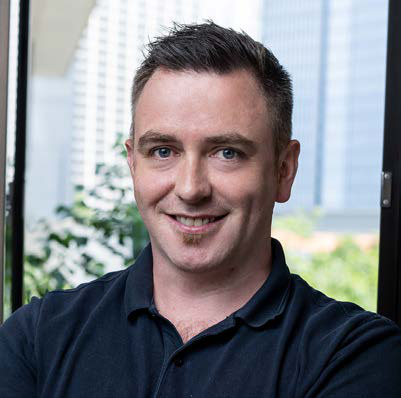

In Singapore, we stayed consistent where it matters most: repeat clients, clean programmes, quality you can see. In Malaysia, we turned momentum into presence, building out work in Kuala Lumpur and Penang. In Thailand, we entered, delivered, and handed over our first project, YETI's APAC workplace, on a 14-week programme. New market, same Mint standards.
These are not just new pins on a map. They reflect capability. Our BIM coordination is tighter, safety is firmer, and QA/QC is visible on site. We also began upgrading our BCA grading to L5 under Integrated Building Services, recognising who we are: an integrated delivery partner, not only an M&E installer.
We have added structure where it counts. The Commercial Director sets cost and contract discipline from bid to close-out. Two General Managers keep sites moving, resolve issues fast, and keep quality visible.
Clients get one clear point of contact, faster approvals, and predictable handovers.
You will see that thread through this issue: from Old Bones, New Beats on conservation engineering, to the Thailand spotlight and profiles of the people leading our next phase.
The promise is unchanged, with agility, technical exactness, and a calm focus on quality.
Thank you to our clients, partners, and the Mint team for a strong year. Here's to a safe and prosperous 2026.